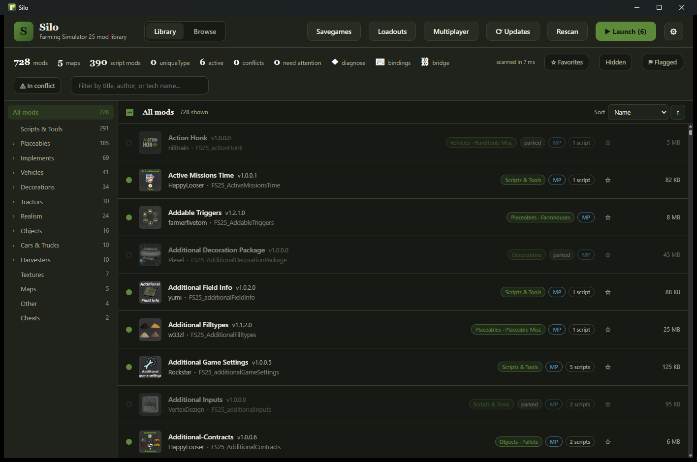
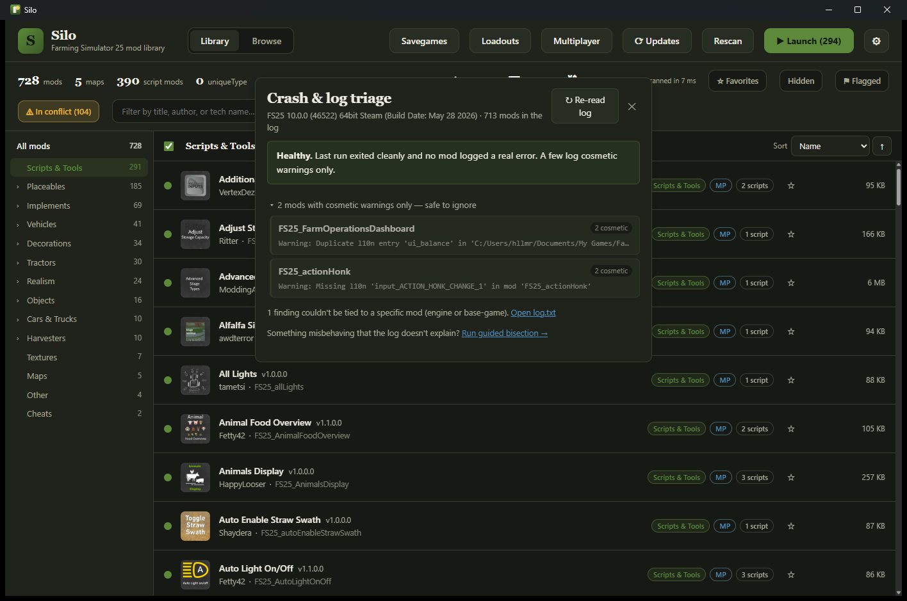
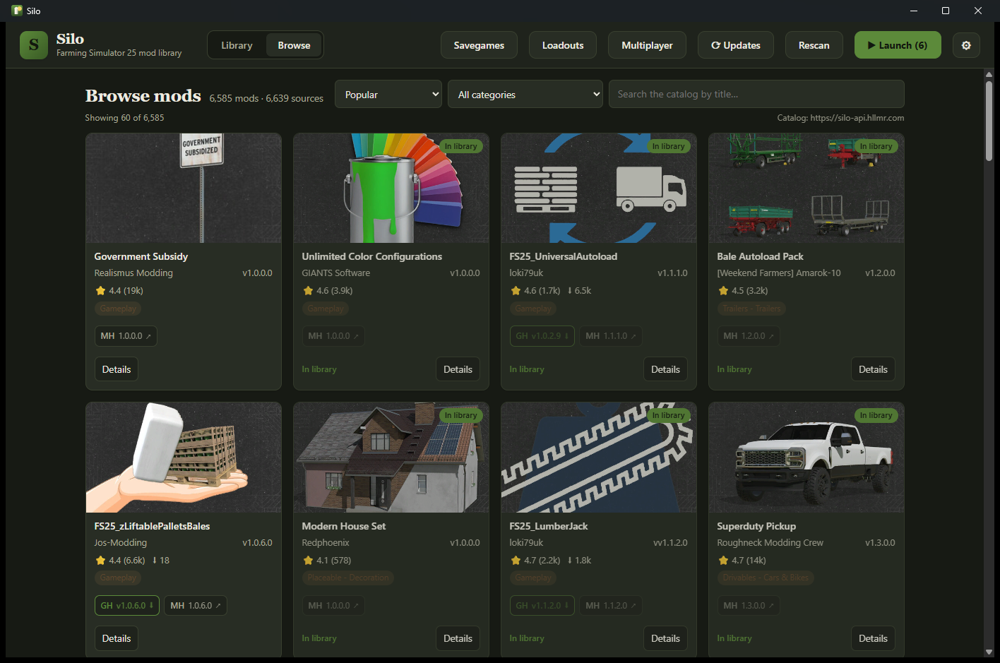
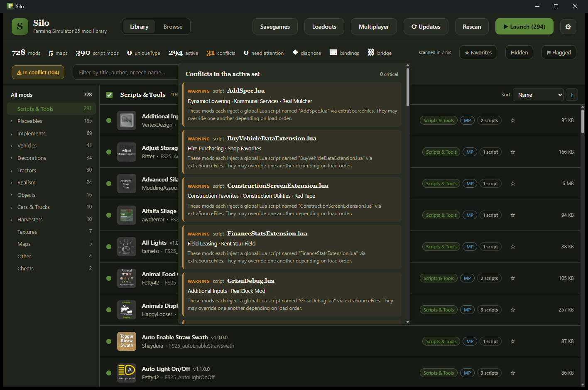

Farming Simulator 25 · mod manager · free & open source
Load up on mods and Silo keeps them straight. It reads the game log to tell you which mod actually crashed you, flags conflicts before you launch, and shows the latest version it can find across ModHub, GitHub and Nexus. Everything it changes on disk is reversible.
The problem
Everything drops into one mods/ folder and loads at once. When something breaks, the game won't tell you which mod did it. Silo handles the parts the game skipped.
The log scrolls a wall of red and names nothing. You disable mods at random and pray.
Two mods claim the same map, filltype or vehicle type. One quietly wins, or your save corrupts.
ModHub says outdated, GitHub shipped days ago, and you can't tell which number is real.
A mod lives on ModHub, its dev on GitHub, a mirror on Nexus. No one place tells the whole story.
What Silo does
Unpacking archives, decoding icons, hashing files: the slow work runs in Rust, off the UI thread. The app stays quick even with 700+ mods installed.
Silo reads log.txt, filters out the cosmetic noise, and points to the mod that actually crashed you. No more disabling things at random.
Two active maps means an instant crash. Silo catches that before you launch, along with filltypes, vehicle types and scripts that collide across your set.
One record per mod that pulls ModHub, GitHub and Nexus together, so you see the latest version found across them instead of whichever source happened to update last.
When the log won't name the culprit, Silo runs the disable-half-and-relaunch routine for you until it's cornered, then puts your active set back exactly as it was.
Build a profile for each playthrough. At launch, Silo links only the active set into the game folder with junctions, so your actual files never move.
Generates a small companion mod that teaches your equipment a map filltype it stubbornly refuses to load. The sugar-beet fix, with no vehicle edits.
Star the repo on GitHub, endorse it on Nexus, jump to the ModHub page to rate it, all through your own accounts. Silo just opens the door. Your credentials and data stay yours.
See it




Why you can trust it
// open
Every line is on GitHub. Audit it, fork it, build it yourself.
// quiet
Silo uses the network only for catalog search, update checks, and the source actions you choose. Nothing else leaves your machine.
// safe
Silo files your mods into a local archive and links the active set into the game. Every move is recorded so it can be undone, and it backs up before it overwrites anything.
// everywhere
One native app, per-OS game discovery, no runtime to install.
How it works
Silo finds your mods folder and unpacks every archive in the background, sorting each one by type. The result is cached, so the next scan is instant.
Sort, tag and rate your mods, then build loadouts. Conflicts and update status show up here, before you ever launch the game.
At launch, only your active set gets linked into the game folder. Quit, switch profiles and relaunch as often as you like. Nothing ever moves.
Questions
Yes, and it always will be. Silo is fully open source, with no account to create, no paid tier, and nothing phoning home. Every line is on GitHub if you want to audit it or build it yourself.
It manages your Farming Simulator 25 mods. Silo organizes the library and reads log.txt to name the mod that crashed you. It flags conflicts such as duplicate maps and colliding filltypes, vehicle types or scripts. And it pulls ModHub, GitHub and Nexus into one catalog that shows the latest version found across all three.
It moves them, but reversibly. Silo files your ZIPs into a local archive, then links only your active set into the game's mods folder at launch. Every move is recorded so it can be undone, and it backs up before it overwrites anything or edits a savegame.
Windows, macOS (Intel & Apple Silicon) and Linux. It's one native app with per-OS game discovery and no runtime to install.
Yes. Silo keeps one record per mod that pulls all three together, so you see the latest version found across them. You can act on each through your own accounts: star on GitHub, endorse on Nexus, rate on ModHub. Silo just opens the door; your credentials stay on your machine.
No telemetry and no account, so there's nothing to sign up for and nothing phoned home. The catalog data comes from a public read-only API; your library and actions stay on your machine and in your own source accounts.
Download
Free, forever. Grab the installer for your platform, or build it from source.
Silo is open source and unsigned, so Windows SmartScreen or macOS Gatekeeper may warn on first launch — you can read or build the source to verify it yourself. Auto-update lands after beta.